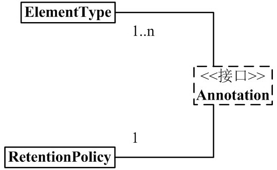
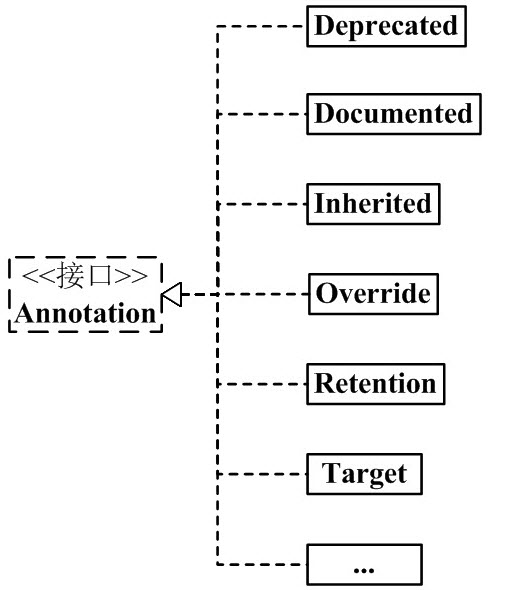
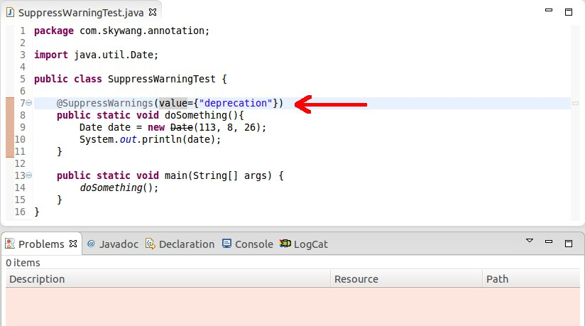

Java言語のクラス、メソッド、変数、パラメータ、パッケージなどはすべてアノテーションを付けることができます。Javadocとは異なり、Javaアノテーションはリフレクションによってアノテーション内容を取得できます。コンパイラがクラスファイルを生成するときに、アノテーションはバイトコードに埋め込むことができます。Java仮想マシンはアノテーション内容を保持でき、実行時にアノテーション内容を取得できます。もちろんカスタムJavaアノテーションもサポートしています。
インターネット上にはJava Annotationに関する記事が多く、読んでいて目が回るほどです。Java Annotationは本来とても簡単なのに、説明する人が明確に説明していないため、読む人がますます混乱してしまいます。
私は自分の考え方に従って、Annotationを整理しました。Annotationを理解する鍵は、Annotationの構文と使い方を理解することです。これらの内容について詳しく説明しました。Annotationの構文と使い方を理解した後に、Annotationのフレームワーク図を見ると、より深く理解できるかもしれません。余談はこれくらいにして、以下でAnnotationの説明を始めます。記事に誤りや不十分な点を見つけた場合は、ご指摘いただければ幸いです。
組み込みアノテーション
Javaは一連のアノテーションを定義しており、全部で7つあり、3つはjava.langに、残りの4つはjava.lang.annotationにあります。
コードに作用するアノテーションは次のとおりです。
- @Override - そのメソッドがオーバーライドメソッドであるかをチェックします。親クラスまたは参照しているインターフェースにそのメソッドがない場合は、コンパイルエラーが発生します。
- @Deprecated - 非推奨メソッドをマークします。このメソッドを使用すると、コンパイル警告が発生します。
- @SuppressWarnings - コンパイラにアノテーションで宣言された警告を無視するように指示します。
他のアノテーションに作用するアノテーション（メタアノテーションとも言う）は次のとおりです。
- @Retention - このアノテーションがどのように保存されるかを示します。コード内のみか、classファイルに組み込むか、または実行時にリフレクションでアクセスできるかです。
- @Documented - これらのアノテーションがユーザードキュメントに含まれるかどうかをマークします。
- @Target - このアノテーションがどのJavaメンバーに適用されるべきかをマークします。
- @Inherited - このアノテーションがどのアノテーションクラスから継承されるかをマークします（デフォルトではアノテーションはいかなるサブクラスにも継承されません）
Java 7 から、追加で3つのアノテーションが追加されました:
- @SafeVarargs - Java 7 からサポートされ、パラメータがジェネリック変数であるメソッドまたはコンストラクタ呼び出しによって生成される警告を無視します。
- @FunctionalInterface - Java 8 からサポートされ、匿名関数または関数型インターフェースを識別します。
- @Repeatable - Java 8 からサポートされ、あるアノテーションが同じ宣言で複数回使用できることを示します。
1、Annotationのアーキテクチャ

これから、次のことがわかります:
(01) 1つのAnnotationは1つのRetentionPolicyと関連付けられます。
つまり、各Annotationオブジェクトには固有のRetentionPolicyプロパティがあります。(02) 1つのAnnotationは1〜n個のElementTypeと関連付けられます。
つまり、各Annotationオブジェクトには複数のElementTypeプロパティを持つことができます。
(03) Annotationには多くの実装クラスがあり、Deprecated、Documented、Inherited、Overrideなどがあります。
Annotationの各実装クラスは、「1つのRetentionPolicyと関連付けられ」、「1〜n個のElementTypeと関連付けられます」。
次に、まずフレームワーク図の左半分（下図参照）、すなわちAnnotation、RetentionPolicy、ElementTypeを紹介します。その後、Annotationの実装クラスについて例を挙げて説明します。

2、Annotationの構成要素
Java Annotationの構成には、非常に重要な3つの中核クラスがあります。それらは次のとおりです:
Annotation.java
public interface Annotation {
boolean equals(Object obj);
int hashCode();
String toString();
Class<? extends Annotation> annotationType();
}
ElementType.java
public enum ElementType {
TYPE, /* クラス、インターフェース（注釈タイプを含む）、または列挙型の宣言 */
FIELD, /* フィールド宣言（列挙定数を含む） */
METHOD, /* メソッド宣言 */
PARAMETER, /* パラメータ宣言 */
CONSTRUCTOR, /* コンストラクタ宣言 */
LOCAL_VARIABLE, /* ローカル変数宣言 */
ANNOTATION_TYPE, /* 注釈タイプ宣言 */
PACKAGE /* パッケージ宣言 */
}
RetentionPolicy.java
public enum RetentionPolicy {
SOURCE, /* Annotation情報はコンパイラの処理中にのみ存在し、コンパイラの処理後にはそのAnnotation情報はなくなります */
CLASS, /* コンパイラはAnnotationをクラスに対応する.classファイルに格納します。デフォルトの動作 */
RUNTIME /* コンパイラはAnnotationをclassファイルに格納し、JVMが読み込むことができます */
}
説明：
(01) Annotationは単なるインターフェースです。
「各Annotation」は「1つのRetentionPolicy」と関連付けられ、「1〜n個のElementType」と関連付けられます。分かりやすく言うと、各Annotationオブジェクトには固有のRetentionPolicyプロパティがあり、ElementTypeプロパティは1〜n個あります。
(02) ElementTypeはEnum列挙型であり、Annotationのタイプを指定するために使用されます。
「各Annotation」は「1〜n個のElementType」と関連付けられます。Annotationが特定のElementTypeと関連付けられると、Annotationに何らかの用途があることを意味します。例えば、AnnotationオブジェクトがMETHODタイプの場合、そのAnnotationはメソッドを修飾するためにのみ使用できます。
(03) RetentionPolicyはEnum列挙型であり、Annotationのポリシーを指定するために使用されます。分かりやすく言うと、RetentionPolicyタイプが異なると、Annotationのスコープも異なります。
「各Annotation」は「1つのRetentionPolicy」と関連付けられます。
- AnnotationのタイプがSOURCEの場合、Annotationはコンパイラの処理中にのみ存在し、コンパイラの処理後はそのAnnotationは役に立たなくなります。例えば、「@Override」マーカーはAnnotationの1つです。メソッドを修飾するとき、そのメソッドが親クラスのメソッドをオーバーライドすることを意味し、コンパイル中に構文チェックが行われます。コンパイラの処理後、「@Override」は何の役割もなくなります。
- b) AnnotationのタイプがCLASSの場合、コンパイラはAnnotationをクラスに対応する.classファイルに格納します。これはAnnotationのデフォルトの動作です。
- c) AnnotationのタイプがRUNTIMEの場合、コンパイラはAnnotationをclassファイルに格納し、JVMが読み込むことができます。
この時点では、「各Annotation」が「1つのRetentionPolicy」と関連付けられ、「1〜n個のElementType」と関連付けられていることだけを覚えておいてください。後の内容を学んだ後に、これらの内容を振り返ると、より理解しやすくなります。
3、Java標準のAnnotation
上記の3つのクラスの役割を理解した後、次にAnnotation実装クラスの構文定義を説明できます。
1）Annotationの一般的な定義
@Documented
@Target(ElementType.TYPE)
@Retention(RetentionPolicy.RUNTIME)
public @interface MyAnnotation1 {
}
説明：
上記の作用は、Annotation を定義することです。その名前は MyAnnotation1 です。MyAnnotation1 を定義した後、コード内で "@MyAnnotation1" を使用してそれを利用できます。 その他に、@Documented、@Target、@Retention、@interface はすべて MyAnnotation1 を修飾するためのものです。以下でそれぞれの意味を説明します。
(01) @interface
@interface を使用して Annotation を定義する場合、それは java.lang.annotation.Annotation インターフェースを実装していることを意味します。つまり、その Annotation は 1 つの Annotation です。
Annotation を定義する際、@interface は必須です。注意：これは、私たちが通常行う implemented によるインターフェース実装の方法とは異なります。Annotation インターフェースの実装の詳細はすべてコンパイラによって完了します。@interface によって Annotation を定義した後、その Annotation は他の Annotation やインターフェースを継承できません。
(02) @Documented
クラスおよびメソッドの Annotation は、デフォルトでは javadoc に表示されません。@Documented を使用してその Annotation を修飾すると、javadoc に表示できることを意味します。
Annotation を定義する際、@Documented はあってもなくてもかまいません。定義されていない場合、その Annotation は javadoc に表示されません。
(03) @Target(ElementType.TYPE)
前述のとおり、ElementType は Annotation のタイプ属性です。@Target の作用は、Annotation のタイプ属性を指定することです。
@Target(ElementType.TYPE) は、この Annotation のタイプが ElementType.TYPE であることを指定する意味です。つまり、MyAnnotation1 は「クラス、インターフェース（注釈型を含む）、または列挙型の宣言」を修飾する Annotation です。
Annotation を定義する際、@Target はあってもなくてもかまいません。@Target があれば、その Annotation は指定された場所にのみ使用できます。@Target がなければ、その Annotation はどこでも使用できます。
(04) @Retention(RetentionPolicy.RUNTIME)
前述のとおり、RetentionPolicy は Annotation のポリシー属性です。@Retention の作用は、Annotation のポリシー属性を指定することです。
@Retention(RetentionPolicy.RUNTIME) は、この Annotation のポリシーが RetentionPolicy.RUNTIME であることを指定する意味です。つまり、コンパイラはその Annotation 情報を .class ファイルに保持し、仮想マシンが読み取ることができます。
Annotation を定義する際、@Retention はあってもなくてもかまいません。@Retention がない場合、デフォルトは RetentionPolicy.CLASS です。
2）Java標準のAnnotation
上記の例を通じて、@interface は Annotation を宣言するために使用され、@Documented はその Annotation が javadoc に表示されるかどうかを示し、@Target は Annotation のタイプを指定し、@Retention は Annotation のポリシーを指定することを理解できます。
この点を理解すれば、Java 標準の Annotation の実装クラス、つまり Annotation アーキテクチャ図の右半分を容易に理解できます。下図のとおりです。

Java でよく使用される Annotation：
@Deprecated -- @Deprecated 所标注内容，不再被建议使用。 @Override -- @Override 只能标注方法，表示该方法覆盖父类中的方法。 @Documented -- @Documented 所标注内容，可以出现在javadoc中。 @Inherited -- @Inherited只能被用来标注“Annotation类型”，它所标注的Annotation具有继承性。 @Retention -- @Retention只能被用来标注“Annotation类型”，而且它被用来指定Annotation的RetentionPolicy属性。 @Target -- @Target只能被用来标注“Annotation类型”，而且它被用来指定Annotation的ElementType属性。 @SuppressWarnings -- @SuppressWarnings 所标注内容产生的警告，编译器会对这些警告保持静默。
"@Deprecated と @Override" は類似しており、"@Documented, @Inherited, @Retention, @Target" も類似しています。以下では、@Deprecated、@Inherited、@SuppressWarnings の 3 つの Annotation についてのみ説明します。
2.1) @Deprecated
@Deprecated の定義は次のとおりです：
@Documented
@Retention(RetentionPolicy.RUNTIME)
public @interface Deprecated {
}
説明：
- (01) @interface -- これは Deprecated を修飾するために使用され、Deprecated が java.lang.annotation.Annotation インターフェースを実装していることを意味します。つまり、Deprecated は 1 つの Annotation です。 (02) @Documented -- その作用は、この Annotation が javadoc に表示できることを説明することです。
- (03) @Retention(RetentionPolicy.RUNTIME) -- その作用は、Deprecated のポリシーが RetentionPolicy.RUNTIME であることを指定することです。つまり、コンパイラは Deprecated の情報を .class ファイルに保持し、仮想マシンが読み取ることができます。
- (04) @Deprecated が示す内容は、もはや使用が推奨されません。
たとえば、あるメソッドが @Deprecated で示されている場合、そのメソッドは使用が推奨されません。開発者が @Deprecated で示されたメソッドを使用またはオーバーライドしようとすると、コンパイラは対応するヒント情報を表示します。例は次のとおりです：

DeprecatedTest.java
import java.util.Calendar;
public class DeprecatedTest {
// @Deprecated は getString1() を修飾し、それが使用推奨されない関数であることを示します
@Deprecated
private static void getString1(){
System.out.println("Deprecated Method");
}
private static void getString2(){
System.out.println("Normal Method");
}
// Date は日付/時刻クラスです。Java はこのクラスの使用を推奨していません
private static void testDate() {
Date date = new Date(113, 8, 25);
System.out.println(date.getYear());
}
// Calendar は日付/時刻クラスです。Java は "日付/時刻" を表すために Date の代わりに Calendar を使用することを推奨しています
private static void testCalendar() {
Calendar cal = Calendar.getInstance();
System.out.println(cal.get(Calendar.YEAR));
}
public static void main(String[] args) {
getString1();
getString2();
testDate();
testCalendar();
}
}
説明：
上記は eclipse のスクリーンショットで、クラス内の "getString1() と getString2()" および "testDate() と testCalendar()" を比較しています。
(01) getString1() は @Deprecated で示されているため、getString1() の使用は推奨されません。そのため、getString1() の定義と呼び出しの際に、取り消し線が表示されます。この横線は、eclipse() が @Deprecated メソッドに対して行う処理です。
getString2() は @Deprecated で示されていないため、その表示は正常です。
(02) testDate() は Date の関連メソッドを呼び出していますが、Java は Date を使用した日付/時刻操作を推奨していません。そのため、Date の API を呼び出すときに、警告情報が発生します。図中の warnings です。
testCalendar() は Calendar の API を呼び出して日付/時刻を操作しています。Java は Date の代わりに Calendar を使用することを推奨しています。そのため、Calendar を操作しても warning は発生しません。
2.2) @Inherited
@Inherited の定義は次のとおりです：
@Documented
@Retention(RetentionPolicy.RUNTIME)
@Target(ElementType.ANNOTATION_TYPE)
public @interface Inherited {
}
説明：
- (01) @interface -- これは Inherited を修飾するために使用され、Inherited が java.lang.annotation.Annotation インターフェースを実装していることを意味します。つまり、Inherited は 1 つの Annotation です。
- (02) @Documented -- その作用は、この Annotation が javadoc に表示できることを説明することです。
- (03) @Retention(RetentionPolicy.RUNTIME) -- その作用は、Inherited のポリシーが RetentionPolicy.RUNTIME であることを指定することです。つまり、コンパイラは Inherited の情報を .class ファイルに保持し、仮想マシンが読み取ることができます。
- (04) @Target(ElementType.ANNOTATION_TYPE) -- その作用は、Inherited のタイプが ANNOTATION_TYPE であることを指定することです。つまり、@Inherited は "Annotation 型" を修飾するためにのみ使用できます。
- (05) @Inherited の意味は、それが示す Annotation が継承性を持つことです。
MyAnnotation を使用した場合、Base は「MyAnnotation という Annotation を持つ」ことになります。次に、Sub が Base を継承した場合、MyAnnotation は @Inherited が付いている（継承性を持つ）ため、Sub も「MyAnnotation という Annotation を持つ」ことになります。
@Inherited の使用例：
InheritableSon.java
import java.lang.annotation.ElementType;
import java.lang.annotation.Retention;
import java.lang.annotation.RetentionPolicy;
import java.lang.annotation.Inherited;
/**
* カスタムの Annotation。
*/
@Target(ElementType.TYPE)
@Retention(RetentionPolicy.RUNTIME)
@Inherited
@interface Inheritable
{
}
@Inheritable
class InheritableFather
{
public InheritableFather() {
// InheritableBase が Inheritable Annotation を持っているかどうか
System.out.println("InheritableFather:"+InheritableFather.class.isAnnotationPresent(Inheritable.class));
}
}
/**
* InheritableSon クラスは InheritableFather を継承しているだけで、
*/
public class InheritableSon extends InheritableFather
{
public InheritableSon() {
super(); // 親クラスのコンストラクタを呼び出す
// InheritableSon クラスが Inheritable Annotation を持っているかどうか
System.out.println("InheritableSon:"+InheritableSon.class.isAnnotationPresent(Inheritable.class));
}
public static void main(String[] args)
{
InheritableSon is = new InheritableSon();
}
}
実行結果：
InheritableFather:true InheritableSon:true
では、InheritableSon.java を修正します。Inheritable の @Inherited アノテーションをコメントアウトします。
InheritableSon.java
import java.lang.annotation.ElementType;
import java.lang.annotation.Retention;
import java.lang.annotation.RetentionPolicy;
import java.lang.annotation.Inherited;
/**
* カスタム定義のAnnotation。
*/
@Target(ElementType.TYPE)
@Retention(RetentionPolicy.RUNTIME)
//@Inherited
@interface Inheritable
{
}
@Inheritable
class InheritableFather
{
public InheritableFather() {
// InheritableBase が Inheritable Annotation を持っているかどうか
System.out.println("InheritableFather:"+InheritableFather.class.isAnnotationPresent(Inheritable.class));
}
}
/**
* InheritableSon クラスは単に InheritableFather を継承しているだけで、
*/
public class InheritableSon extends InheritableFather
{
public InheritableSon() {
super(); // 親クラスのコンストラクタを呼び出す
// InheritableSon クラスが Inheritable Annotation を持っているかどうか
System.out.println("InheritableSon:"+InheritableSon.class.isAnnotationPresent(Inheritable.class));
}
public static void main(String[] args)
{
InheritableSon is = new InheritableSon();
}
}
実行結果：
InheritableFather:true InheritableSon:false
上記の2つの結果を比較すると、アノテーション Inheritable が @Inherited で注釈されている場合、継承性を持ちます。そうでない場合、継承性はありません。
2.3) @SuppressWarnings
@SuppressWarnings の定義は以下の通りです：
@Target({TYPE, FIELD, METHOD, PARAMETER, CONSTRUCTOR, LOCAL_VARIABLE})
@Retention(RetentionPolicy.SOURCE)
public @interface SuppressWarnings {
String[] value();
}
説明：
(01) @interface -- これは SuppressWarnings を修飾するために使用され、SuppressWarnings が java.lang.annotation.Annotation インターフェースを実装していることを意味します。つまり、SuppressWarnings はアノテーションです。
(02) @Retention(RetentionPolicy.SOURCE) -- その役割は、SuppressWarnings のポリシーが RetentionPolicy.SOURCE であることを指定することです。これは、SuppressWarnings の情報がコンパイラの処理期間中にのみ存在し、コンパイラの処理が完了すると SuppressWarnings は効果がなくなることを意味します。
(03) @Target({TYPE, FIELD, METHOD, PARAMETER, CONSTRUCTOR, LOCAL_VARIABLE}) -- その役割は、SuppressWarnings のタイプが TYPE、FIELD、METHOD、PARAMETER、CONSTRUCTOR、LOCAL_VARIABLE を同時に含むことを指定することです。
- TYPE は、「クラス、インターフェース（アノテーションタイプを含む）、または列挙型の宣言」を注釈できることを意味します。
- FIELD は、「フィールド宣言」を注釈できることを意味します。
- METHOD は、「メソッド」を注釈できることを意味します。
- PARAMETER は、「パラメータ」を注釈できることを意味します。
- CONSTRUCTOR は、「コンストラクタ」を注釈できることを意味します。
- LOCAL_VARIABLE は、「ローカル変数」を注釈できることを意味します。
(04) String[] value(); は、SuppressWarnings がパラメータを指定できることを意味します
(05) SuppressWarnings の役割は、コンパイラに「それが注釈した内容」の特定の警告を抑制させることです。例えば、"@SuppressWarnings(value={"deprecation", "unchecked"})" は、「それが注釈した内容」の中の「非推奨警告」と「未チェック変換時の警告」を抑制することを示します。例は以下の通りです：


SuppressWarningTest.java
public class SuppressWarningTest {
//@SuppressWarnings(value={"deprecation"})
public static void doSomething(){
Date date = new Date(113, 8, 26);
System.out.println(date);
}
public static void main(String[] args) {
doSomething();
}
}
説明：
(01) 左の図では、@SuppressWarnings(value={"deprecation"}) を使用しておらず、Date は java で非推奨のクラスです。そのため、Date の API を呼び出すと、警告が発生します。一方、右の図では、@SuppressWarnings(value={"deprecation"}) を使用しています。そのため、コンパイラは「Date の API の呼び出しによって生成される警告」を抑制します。
補足：SuppressWarnings でよく使われるキーワードの表
deprecation -- 使用了不赞成使用的类或方法时的警告 unchecked -- 执行了未检查的转换时的警告，例如当使用集合时没有用泛型 (Generics) 来指定集合保存的类型。 fallthrough -- 当 Switch 程序块直接通往下一种情况而没有 Break 时的警告。 path -- 在类路径、源文件路径等中有不存在的路径时的警告。 serial -- 当在可序列化的类上缺少 serialVersionUID 定义时的警告。 finally -- 任何 finally 子句不能正常完成时的警告。 all -- 关于以上所有情况的警告。
4、Annotationの役割
Annotation は補助的なクラスであり、Junit、Struts、Spring などのツールフレームワークで広く使用されています。
プログラミングでよく使用される Annotation の役割には、以下のものがあります：
1）コンパイルチェック
Annotation には「コンパイラにコンパイルチェックを実行させる役割」があります。
例えば、@SuppressWarnings、@Deprecated、@Override はすべてコンパイルチェックの役割を持ちます。
(01) @SuppressWarnings と @Deprecated については、「第3部分」で詳しく説明済みです。ここでは例を挙げて説明しません。
(02) あるメソッドが @Override で注釈されている場合、そのメソッドが親クラスの同名メソッドをオーバーライドすることを意味します。もし @Override で示されたメソッドがあるのに、親クラスに対応する同名メソッドが存在しない場合、コンパイラはエラーを報告します。例は以下の通りです：

OverrideTest.java
/**
* toString() は java.lang.Object で定義されています；
* したがって、ここで @Override を注釈するのは正しいです。
*/
@Override
public String toString(){
return "Override toString";
}
/**
* getString() は OverrideTest のどの親クラスにも定義されていません；
* しかし、ここでは @Override で注釈しているため、コンパイルエラーが発生します！
*/
@Override
public String getString(){
return "get toString";
}
public static void main(String[] args) {
}
}
上記はこのプログラムの eclipse でのスクリーンショットです。これから、"getString()" 関数がエラーになることがわかります。これは「getString() が @Override で注釈されているが、OverrideTest のどの親クラスにも getString1() 関数が定義されていない」ためです。
「getString() の上にある @Override をコメントアウトする」ことで、このエラーを解決できます。
2) リフレクションでのAnnotationの使用
リフレクションの Class、Method、Field などの関数には、Annotation に関連する多くのインターフェースがあります。
これは、リフレクションで Annotation を解析して使用できることも意味します。
AnnotationTest.java
import java.lang.annotation.Target;
import java.lang.annotation.ElementType;
import java.lang.annotation.Retention;
import java.lang.annotation.RetentionPolicy;
import java.lang.annotation.Inherited;
import java.lang.reflect.Method;
/**
* リフレクション関数での Annotation の使用例
*/
@Retention(RetentionPolicy.RUNTIME)
@interface MyAnnotation {
String[] value() default "unknown";
}
/**
* Person クラス。これは MyAnnotation アノテーションを使用します。
*/
class Person {
/**
* empty() メソッドは "@Deprecated" と "@MyAnnotation(value={"a","b"})" の両方で注釈されています
* (01) @Deprecated は、empty() メソッドが非推奨となることを意味します
* (02) @MyAnnotation は、empty() メソッドに対応する MyAnnotation の value 値がデフォルト値 "unknown" であることを意味します
*/
@MyAnnotation
@Deprecated
public void empty(){
System.out.println("\nempty");
}
/**
* sombody() は @MyAnnotation(value={"girl","boy"}) で注釈されています、
* @MyAnnotation(value={"girl","boy"}) は、MyAnnotation の value 値が {"girl","boy"} であることを意味します
*/
@MyAnnotation(value={"girl","boy"})
public void somebody(String name, int age){
System.out.println("\nsomebody: "+name+", "+age);
}
}
public class AnnotationTest {
public static void main(String[] args) throws Exception {
// Person を新規作成
Person person = new Person();
// Person の Class インスタンスを取得
Class<Person> c = Person.class;
// somebody() メソッドの Method インスタンスを取得
Method mSomebody = c.getMethod("somebody", new Class[]{String.class, int.class});
// そのメソッドを実行
mSomebody.invoke(person, new Object[]{"lily", 18});
iteratorAnnotations(mSomebody);
// somebody() メソッドの Method インスタンスを取得
Method mEmpty = c.getMethod("empty", new Class[]{});
// そのメソッドを実行
mEmpty.invoke(person, new Object[]{});
iteratorAnnotations(mEmpty);
}
public static void iteratorAnnotations(Method method) {
// somebody() メソッドが MyAnnotation アノテーションを含むかどうかを判断
if(method.isAnnotationPresent(MyAnnotation.class)){
// そのメソッドの MyAnnotation アノテーションインスタンスを取得
MyAnnotation myAnnotation = method.getAnnotation(MyAnnotation.class);
// myAnnotation の値を取得し、出力する
String[] values = myAnnotation.value();
for (String str:values)
System.out.printf(str+", ");
System.out.println();
}
// メソッド上のすべてのアノテーションを取得し、出力する
Annotation[] annotations = method.getAnnotations();
for(Annotation annotation : annotations){
System.out.println(annotation);
}
}
}
実行結果：
somebody: lily, 18 girl, boy, @com.skywang.annotation.MyAnnotation(value=[girl, boy]) empty unknown, @com.skywang.annotation.MyAnnotation(value=[unknown]) @java.lang.Deprecated()
3) Annotationに基づくヘルプドキュメントの生成
Annotation アノテーションに @Documented タグを付けることで、その Annotation タグを javadoc に表示させることができます。
4) コードの確認に役立つ
@Override、@Deprecated などを通じて、プログラムのおおよその構造を簡単に把握できます。
また、カスタム定義の Annotation を通じていくつかの機能を実装することもできます。
原文アドレス：https://www.cnblogs.com/skywang12345/p/3344137.html